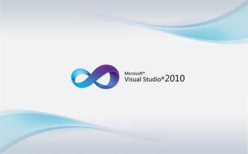

简介
VS是Microsoft Visual Studio的简称。VS是美国微软公司的开发工具包系列产品。VS是一个基本完整的开发工具集，它包括了整个软件生命周期中所需要的大部分工具，如UML工具、代码管控工具、集成开发环境(IDE)等等。所写的目标代码适用于微软支持的所有平台，包括Microsoft Windows、Windows Mobile、Windows CE、.NET Framework、.NET Compact Framework和Microsoft Silverlight 及Windows Phone。
Visual Studio是目前最流行的Windows平台应用程序的集成开发环境。最新版本为 Visual Studio 2019版本，基于.NET Framework 4.7。
|
二、发展历程
visual studio发展年代列表：
1.1997年，微软发布了 Visual Studio 97。
2.1998 年，微软发布了 Visual Studio 6.0。
3.2002 年，随着 .NET 口号的提出与 Windows XP/Office XP 的发布，微软发布了 Visual Studio .NET。
4.2003 年，微软对 Visual Studio 2002 进行了部分修订，以 Visual Studio 2003 的名义发布（内部版本号为 7.1）。
5.2005 年，微软发布了 Visual Studio 2005。.NET 字眼从各种语言的名字中被抹去，但是这个版本的 Visual Studio 仍然还是面向 .NET 框架的（版本2.0）。
6.2007年11月，微软发布了 Visual Studio 2008。
7.2010年4月12，微软发布了 Visual Studio 2010 以及.NET Framework 4.0。
8.2012年9月12日，微软在西雅图发布 Visual Studio 2012。
9. 1998 年，ANSI 和 ISO 终于先后批准 C++ 语言成为美国国家标准和国际标准。
10.2013年11月13日，微软发布 Visual Studio 2013。
11.2014年7月8日，微软发布了Visual Studio 2014。
12.2015年7月21日，微软发布Visual Studio 2015。
13.2019年4月2日，微软发布Visual Studio 2019。
|
VS 经典版本：VS 2010

特点
支持Windows Azure，微软云计算架构迈入重要里程碑。
助力移动与嵌入式装置开发，三屏一云商机无限。
实践当前最热门的 Agile/Scrum 开发方法，强化团队竞争力。
升级的软件测试功能及工具，为软件质量严格把关。
搭配Windows 7，Silverlight4 与 Office，发挥多核并行运算威力，
创建美感与效能并重的新一代软件。
支持最新C++标准，增强IDE，切实提高程序员开发效率。
变化
Visual Studio 支持用户透过多种不同的程序语言进行开发，但历代版本所支持的语言并不完全相同，例如，Visual Studio .NET 2002 时，微软将 Visual J++ 改版为 Visual J#，但至 Visual Studio 2008 时取消支持 Visual J#；而 Visual Studio 2010 时，并入支持新语言 Visual F#。Visual Studio 2010 原生支持：Visual Basic、Visual C#、Visual C++、Visual F#四种程序语言。
具体介绍
Visual Basic 2010
Visual Basic 2010（版本号：10.0），提供支持Dynamic Language Runtime (DLR)。Visual Basic 2010 同时也是Silverlight 2.0计划的一部分。
Visual C++ 2010
Visual C++ 2010（版本号：10.0），于2010年发布。Visual C++ 开发团队考虑使用 SQL Server Compact 格式的数据库来存储源码的相关信息。此版也加入了现代化的C++并行运算库 Parallel Patterns Library。此版建构于.NET Framework 4.0之上，但仍支持机器码的编译。
Visual C# 2010
Visual C# 2010（版本号：4.0）是微软开发的一种面向对象的编程语言，是微软.NET开发环境的重要组成部分。它是为生成在 .NET Framework 上运行的多种应用程序而设计的。C# 简单、功能强大、类型安全，而且是面向对象的。C# 凭借它的许多创新，在保持 C 样式语言的表示形式和优美的同时，实现了应用程序的快速开发。
Visual F#2010
Visual F#（版本号：2.0）是由微软发展的为微软.NET语言提供运行环境的程序设计语言，是函数编程语言（Functional Programming, FP），函数编程语言最重要的基础是 Lambda Calculus 。它是基于OCaml的，而OCaml是基于ML函数程式语言。有时F#和OCaml的程式可以交互编译。
|